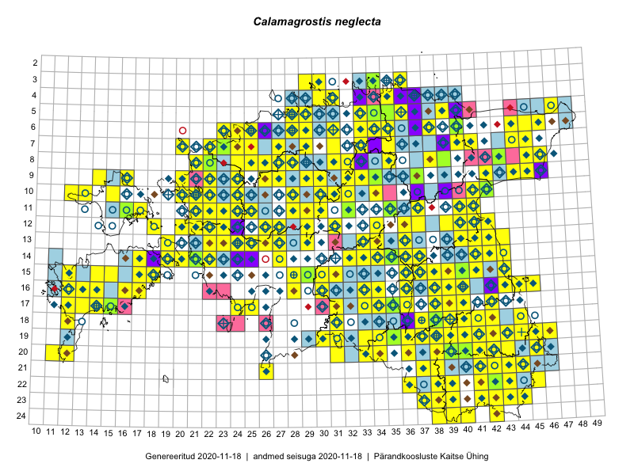

Calamagrostis neglecta
Uuendatud: 2016-12-08
Kaardile koondatud taksonid: Calamagrostis neglecta (Ehrh.) P.Gaertn., B.Mey. & Scherb.; Calamagrostis stricta (Timm) Koeler

Kaart põhineb 201 kirjel, neist vaatlusi 199 ja eksemplare 2. Taksonit on leitud 167 ruudust.
| Ruut | Vaatleja(d) | Vaatlusaeg | Kirje tüüp | Viide andmebaasikirjele |
|---|---|---|---|---|
| 13-26 | Toomas Kukk, Thea Kull, Timo Luhamäe, Ott Luuk, Peedu Saar | 2015-06-28 | ruut/ala | vaata PlutoFis |
| 09-14 | Toomas Kukk, Eerik Leibak | 2015-08-10 | ruut/ala | vaata PlutoFis |
| 09-32 | Ott Luuk, Toivo Sepp | 2015-07-29 | ruut/ala | vaata PlutoFis |
| 14-41 | Peedu Saar, Ott Luuk | 2015-06-21 | ruut/ala | vaata PlutoFis |
| 11-35 | Ott Luuk, Peedu Saar | 2015-07-27 | ruut/ala | vaata PlutoFis |
| 18-44 | Peedu Saar | 2015-07-04 | ruut/ala | vaata PlutoFis |
| 15-38 | Peedu Saar | 2015-07-14 | ruut/ala | vaata PlutoFis |
| 23-43 | Ott Luuk, Peedu Saar | 2015-08-12 | ruut/ala | vaata PlutoFis |
| 09-16 | Toomas Kukk, Eerik Leibak | 2015-08-11 | ruut/ala | vaata PlutoFis |
| 06-44 | Peedu Saar, Liina Oja | 2015-07-21 | ruut/ala | vaata PlutoFis |
| 08-45 | Peedu Saar, Liina Oja | 2015-07-22 | ruut/ala | vaata PlutoFis |
| 16-44 | Toomas Kukk, Eerik Leibak | 2015-07-29 | ruut/ala | vaata PlutoFis |
| 15-30 | Tiit Hallikma, Toomas Kukk | 2015-06-10 | ruut/ala | vaata PlutoFis |
| 09-45 | Peedu Saar, Liina Oja | 2015-07-24 | ruut/ala | vaata PlutoFis |
| 14-36 | Peedu Saar | 2015-08-04 | ruut/ala | vaata PlutoFis |
| 13-40 | Peedu Saar | 2015-08-10 | ruut/ala | vaata PlutoFis |
| 13-41 | Peedu Saar | 2015-08-11 | ruut/ala | vaata PlutoFis |
| 23-42 | Peedu Saar, Ott Luuk | 2015-08-12 | ruut/ala | vaata PlutoFis |
| 24-42 | Peedu Saar, Ott Luuk | 2015-08-13 | ruut/ala | vaata PlutoFis |
| 07-41 | Tiit Hallikma, Toomas Kukk | 2015-07-23 | ruut/ala | vaata PlutoFis |
| 07-44 | Tiit Hallikma, Toomas Kukk | 2015-07-20 | ruut/ala | vaata PlutoFis |
| 12-21 | Tiit Hallikma, Toomas Kukk | 2015-08-27 | ruut/ala | vaata PlutoFis |
| 11-41 | Peedu Saar | 2015-08-22 | ruut/ala | vaata PlutoFis |
| 04-30 | Peedu Saar, Ott Luuk | 2015-09-03 | ruut/ala | vaata PlutoFis |
| 07-40 | Ott Luuk, Hannes Pehlak | 2015-07-23 | ruut/ala | vaata PlutoFis |
| 22-38 | Peedu Saar | 2015-10-01 | ruut/ala | vaata PlutoFis |
| 16-17 | Meeli Mesipuu, Kadri Tali | 2015-07-06 | ruut/ala | vaata PlutoFis |
| 17-40 | Thea Kull, Peedu Saar | 2015-06-19 | ruut/ala | vaata PlutoFis |
| 14-17 | Meeli Mesipuu, Kadri Tali | 2015-07-08 | ruut/ala | vaata PlutoFis |
| 17-39 | Thea Kull, Peedu Saar | 2015-06-17 | ruut/ala | vaata PlutoFis |
| 18-38 | Toomas Kukk, Peedu Saar, Mall Värva, Sander Laherand | 2014-07-27 | ruut/ala | vaata PlutoFis |
| 14-43 | Thea Kull, Eerik Leibak | 2015-07-06 | ruut/ala | vaata PlutoFis |
| 14-19 | Meeli Mesipuu | 2015-07-11 | ruut/ala | vaata PlutoFis |
| 08-46 | Meeli Mesipuu, Timo Luhamäe | 2015-07-21 | ruut/ala | vaata PlutoFis |
| 10-22 | Toomas Kukk, Thea Kull | 2014-08-21 | ruut/ala | vaata PlutoFis |
| 07-29 | Toomas Kukk, Thea Kull | 2014-08-20 | ruut/ala | vaata PlutoFis |
| 16-43 | Thea Kull, Meeli Mesipuu | 2015-08-12 | ruut/ala | vaata PlutoFis |
| 12-22 | Ott Luuk, Peedu Saar | 2015-08-24 | ruut/ala | vaata PlutoFis |
| 11-29 | Ott Luuk, Toivo Sepp | 2015-08-20 | ruut/ala | vaata PlutoFis |
| 11-32 | Ott Luuk, Toivo Sepp | 2015-08-18 | ruut/ala | vaata PlutoFis |
| 22-38 | Eeva-Maria Jeletsky, Tarmo Niitla | 2015-07-17 | ruut/ala | vaata PlutoFis |
| 22-39 | Eeva-Maria Jeletsky, Tarmo Niitla | 2015-07-25 | ruut/ala | vaata PlutoFis |
| 10-32 | Ott Luuk | 2015-08-03 | ruut/ala | vaata PlutoFis |
| 23-37 | Eeva-Maria Jeletsky, Tarmo Niitla | 2015-07-16 | ruut/ala | vaata PlutoFis |
| 24-39 | Eeva-Maria Jeletsky, Tarmo Niitla | 2015-07-25 | ruut/ala | vaata PlutoFis |
| 24-40 | Eeva-Maria Jeletsky, Tarmo Niitla | 2015-07-25 | ruut/ala | vaata PlutoFis |
| 19-38 | Eeva-Maria Jeletsky, Tarmo Niitla | 2015-08-12 | ruut/ala | vaata PlutoFis |
| 17-12 | Mari Reitalu | 2014-08-31 | ruut/ala | vaata PlutoFis |
| 17-12 | Mari Reitalu | 2014-09-02 | ruut/ala | vaata PlutoFis |
| 17-33 | Maria Abakumova | 2015-06-29 | ruut/ala | vaata PlutoFis |
| 17-12 | Mari Reitalu | 2015-08-27 | ruut/ala | vaata PlutoFis |
| 17-12 | Mari Reitalu | 2015-08-13 | ruut/ala | vaata PlutoFis |
| 07-25 | Erkki Otsman, Sergei Smirnov | 2015-07-17 | ruut/ala | vaata PlutoFis |
| 20-38 | Eeva-Maria Jeletsky, Tarmo Niitla | 2015-08-11 | ruut/ala | vaata PlutoFis |
| 17-12 | Mari Reitalu | 2015-08-11 | ruut/ala | vaata PlutoFis |
| 23-41 | Eeva-Maria Jeletsky, Tarmo Niitla | 2015-08-03 | ruut/ala | vaata PlutoFis |
| 12-37 | Ülle Jõgar, Illi Tarmu, K. Rünk | 2015-07-23 | ruut/ala | vaata PlutoFis |
| 16-12 | Mari Reitalu | 2015-08-23 | ruut/ala | vaata PlutoFis |
| 10-42 | Kai Rünk, Ülle Jõgar, Illi Tarmu | 2015-07-29T07:00Z | ruut/ala | vaata PlutoFis |
| 16-12 | Mari Reitalu | 2015-09-03 | ruut/ala | vaata PlutoFis |
| 17-13 | Mari Reitalu, Oliver Parrest | 2015-08-12 | ruut/ala | vaata PlutoFis |
| 15-12 | Mari Reitalu, Oliver Parrest | 2015-07-14 | ruut/ala | vaata PlutoFis |
| 16-13 | Mari Reitalu, Oliver Parrest | 2015-07-27 | ruut/ala | vaata PlutoFis |
| 13-22 | Kirsi Loide, Marje Loide | 2015-08-10 | ruut/ala | vaata PlutoFis |
| 17-42 | Kirsi Loide, Marje Loide | 2015-07-27 | ruut/ala | vaata PlutoFis |
| 18-42 | Kirsi Loide, Marje Loide | 2015-07-28 | ruut/ala | vaata PlutoFis |
| 19-42 | Kirsi Loide, Marje Loide | 2015-07-29 | ruut/ala | vaata PlutoFis |
| 07-33 | Meeli Mesipuu | 2015-06-29 | ruut/ala | vaata PlutoFis |
| 19-46 | Meeli Mesipuu, Thea Kull | 2015-08-19 | ruut/ala | vaata PlutoFis |
| 12-23 | Thea Kull, Eerik Leibak | 2015-08-26 | ruut/ala | vaata PlutoFis |
| 18-37 | Helle Mäemets, Mare Leis | 2015-06-22 | ruut/ala | vaata PlutoFis |
| 10-30 | Toivo Sepp, Ott Luuk | 2015-08-21 | ruut/ala | vaata PlutoFis |
| 13-42 | Meeli Mesipuu, Thea Kull | 2015-08-14 | ruut/ala | vaata PlutoFis |
| 14-42 | Kadi Palmik, Helle Mäemets | 2015-07-24 | ruut/ala | vaata PlutoFis |
| 06-40 | Mari Metsoja, Jaak-Albert Metsoja | 2015-07-24 | ruut/ala | vaata PlutoFis |
| 18-40 | Kadi Palmik, Helle Mäemets | 2015-08-13 | ruut/ala | vaata PlutoFis |
| 06-24 | Mari Metsoja, Jaak-Albert Metsoja | 2015-07-31 | ruut/ala | vaata PlutoFis |
| 18-41 | Kadi Palmik, Helle Mäemets | 2015-08-13 | ruut/ala | vaata PlutoFis |
| 15-36 | Helle Mäemets, Mare Leis | 2015-07-06 | ruut/ala | vaata PlutoFis |
| 22-38 | Kadi Palmik, Helle Mäemets | 2015-08-19 | ruut/ala | vaata PlutoFis |
| 12-41 | Kadi Palmik, Helle Mäemets | 2015-07-24 | ruut/ala | vaata PlutoFis |
| 06-38 | Kaili Orav, Silvia Pihu | 2015-07-20 | ruut/ala | vaata PlutoFis |
| 20-45 | Kersti Püssa, Rein Kalamees | 2015-07-16 | ruut/ala | vaata PlutoFis |
| 15-40 | Kadi Palmik, Helle Mäemets | 2015-07-24 | ruut/ala | vaata PlutoFis |
| 09-33 | Peedu Saar, Ott Luuk | 2014-08-05 | ruut/ala | vaata PlutoFis |
| 14-34 | Aat Sarv | 2015-09-09 | ruut/ala | vaata PlutoFis |
| 14-33 | Aat Sarv | 2016-04-25 | ruut/ala | vaata PlutoFis |
| 09-22 | Ott Luuk, Peedu Saar, Maret Gerz | 2014-08-21 | ruut/ala | vaata PlutoFis |
| 08-35 | Peedu Saar, Ott Luuk | 2014-09-02 | ruut/ala | vaata PlutoFis |
| 05-29 | Peedu Saar, Sander Laherand | 2013-07-07 | ruut/ala | vaata PlutoFis |
| 11-21 | Hanna-Eliisa Luts, Tõnu Ploompuu | 2015-08-13 | ruut/ala | vaata PlutoFis |
| 10-24 | Hanna-Eliisa Luts, Tõnu Ploompuu, Anna-Grete Rebane | 2015-07-19 | ruut/ala | vaata PlutoFis |
| 09-27 | Aat Sarv | 2015-07-24 | ruut/ala | vaata PlutoFis |
| 11-22 | Tõnu Ploompuu | 2015-08-21 | ruut/ala | vaata PlutoFis |
| 06-28 | Tõnu Ploompuu | 2015-06-06 | ruut/ala | vaata PlutoFis |
| 08-24 | Sirje Lagle, Tõnu Ploompuu | 2015-08-18 | ruut/ala | vaata PlutoFis |
| 09-34 | Jana-Maria Habicht, Ester Valdvee, Kirke Pilvik | 2015-07-25 | ruut/ala | vaata PlutoFis |
| 19-42 | Ott Luuk, Sander Laherand | 2016-06-17 | ruut/ala | vaata PlutoFis |
| 22-42 | Toomas Kukk, Tiit Hallikma, Johannes Kõdar | 2016-06-15 | ruut/ala | vaata PlutoFis |
| 22-43 | Toomas Kukk, Tiit Hallikma, Johannes Kõdar | 2016-06-15 | ruut/ala | vaata PlutoFis |
| 23-44 | Rein Kalamees, Eerik Leibak | 2016-06-15 | ruut/ala | vaata PlutoFis |
| 19-43 | Sander Laherand, Ott Luuk | 2016-06-17 | ruut/ala | vaata PlutoFis |
| 20-39 | Rein Kalamees, Eerik Leibak | 2016-06-17 | ruut/ala | vaata PlutoFis |
| 12-42 | Eeva-Maria Jeletsky, Tarmo Niitla | 2016-06-04 | ruut/ala | vaata PlutoFis |
| 19-33 | Silvia Pihu | 2015-07-10 | ruut/ala | vaata PlutoFis |
| 19-34 | Silvia Pihu, Illi Tarmu | 2015-07-11 | punkt | vaata PlutoFis |
| ? | Silvia Pihu, Illi Tarmu | 2015-07-12 | punkt | vaata PlutoFis |
| 20-34 | Silvia Pihu, Illi Tarmu | 2015-07-13 | ruut/ala | vaata PlutoFis |
| 21-37 | Silvia Pihu | 2015-06-28 | ruut/ala | vaata PlutoFis |
| 22-36 | Silvia Pihu | 2015-06-27 | ruut/ala | vaata PlutoFis |
| 21-41 | Ott Luuk, Sander Laherand | 2016-06-16 | ruut/ala | vaata PlutoFis |
| 19-39 | Peedu Saar, Tarmo Niitla | 2016-06-13 | ruut/ala | vaata PlutoFis |
| 20-41 | Peedu Saar, Tarmo Niitla | 2016-06-16 | ruut/ala | vaata PlutoFis |
| 20-43 | Meeli Mesipuu, Timo Luhamäe | 2016-06-17 | ruut/ala | vaata PlutoFis |
| 12-40 | Eeva-Maria Jeletsky, Tarmo Niitla | 2016-06-26 | ruut/ala | vaata PlutoFis |
| 21-41 | Vivika Väli, Ülo Väli | 2015-07-15 | ruut/ala | vaata PlutoFis |
| 19-43 | Vivika Väli, Ülo Väli | 2015-08-05 | ruut/ala | vaata PlutoFis |
| 21-42 | Vivika Väli, Ülo Väli | 2015-07-26 | ruut/ala | vaata PlutoFis |
| 20-41 | Vivika Väli, Ülo Väli | 2015-07-27 | ruut/ala | vaata PlutoFis |
| 06-25 | Toomas Kukk, Sander Laherand | 2016-07-05 | ruut/ala | vaata PlutoFis |
| 09-26 | Thea Kull, Oliver Parrest | 2016-07-06 | ruut/ala | vaata PlutoFis |
| 09-29 | Toomas Kukk, Sander Laherand | 2016-07-06 | ruut/ala | vaata PlutoFis |
| 12-29 | Mari Reitalu, Eerik Leibak | 2016-07-06 | ruut/ala | vaata PlutoFis |
| 09-16 | Eeva-Maria Jeletsky, Tarmo Niitla | 2016-07-13 | ruut/ala | vaata PlutoFis |
| 17-36 | Rein Kalamees, Kersti Püssa | 2016-07-20 | ruut/ala | vaata PlutoFis |
| 18-39 | Tarmo Niitla, Peedu Saar | 2016-06-13 | ruut/ala | vaata PlutoFis |
| 20-42 | Tarmo Niitla, Peedu Saar | 2016-06-16 | ruut/ala | vaata PlutoFis |
| 14-21 | Mari Reitalu, Oliver Parrest | 2016-07-04 | ruut/ala | vaata PlutoFis |
| 17-33 | Toomas Kukk, Eerik Leibak | 2016-07-20 | ruut/ala | vaata PlutoFis |
| 18-31 | Toomas Kukk, Hannes Pehlak | 2016-07-19 | ruut/ala | vaata PlutoFis |
| 10-34 | Mari Metsoja, Eerik Leibak | 2016-07-21 | ruut/ala | vaata PlutoFis |
| 12-36 | Toomas Kukk, Raivo Kalle | 2016-07-22 | ruut/ala | vaata PlutoFis |
| 13-36 | Toomas Kukk, Raivo Kalle | 2016-07-22 | ruut/ala | vaata PlutoFis |
| 05-36 | Tõnu Ploompuu, Eerik Leibak | 2016-07-27 | ruut/ala | vaata PlutoFis |
| 22-42 | Thea Kull, Peedu Saar | 2016-08-04 | ruut/ala | vaata PlutoFis |
| 11-32 | Aat Sarv, Jaak-Albert Metsoja | 2016-07-21 | ruut/ala | vaata PlutoFis |
| 10-41 | Ott Luuk, Eerik Leibak | 2016-08-04 | ruut/ala | vaata PlutoFis |
| 09-42 | Ott Luuk, Eerik Leibak | 2016-08-05 | ruut/ala | vaata PlutoFis |
| 06-46 | Erkki Otsman, Sergei Smirnov | 2016-06-17 | ruut/ala | vaata PlutoFis |
| 14-22 | Erkki Otsman, Sergei Smirnov | 2016-06-23 | ruut/ala | vaata PlutoFis |
| 17-14 | Toomas Kukk, Meeli Mesipuu, Johannes Kõdar | 2016-08-11 | ruut/ala | vaata PlutoFis |
| 10-12 | Sander Laherand, Maret Gerz, Nele Jõessar | 2016-08-10 | ruut/ala | vaata PlutoFis |
| 12-31 | Aat Sarv, Indrek Tammekänd | 2016-07-22 | ruut/ala | vaata PlutoFis |
| 16-38 | Rein Kalamees, Kersti Püssa | 2016-07-19 | ruut/ala | vaata PlutoFis |
| 22-43 | Peedu Saar, Thea Kull | 2016-08-04 | ruut/ala | vaata PlutoFis |
| 04-35 | Sander Laherand, Ott Luuk, Nele Jõessar | 2016-07-26 | ruut/ala | vaata PlutoFis |
| 11-17 | Maret Gerz, Meeli Mesipuu | 2016-08-08 | ruut/ala | vaata PlutoFis |
| 22-45 | Peedu Saar, Karin Kikas | 2016-08-18 | ruut/ala | vaata PlutoFis |
| 23-44 | Peedu Saar, Karin Kikas | 2016-08-19 | ruut/ala | vaata PlutoFis |
| 06-28 | Erkki Otsman, Sergei Smirnov | 2016-07-14 | ruut/ala | vaata PlutoFis |
| 08-39 | Meeli Mesipuu, Liina Oja | 2016-07-29 | ruut/ala | vaata PlutoFis |
| 15-39 | Kaire Lanno, Karin Kaljund | 2016-07-19 | ruut/ala | vaata PlutoFis |
| 15-40 | Kaire Lanno, Karin Kaljund | 2016-07-18 | ruut/ala | vaata PlutoFis |
| 17-39 | Rein Kalamees, Kersti Püssa | 2016-07-21 | ruut/ala | vaata PlutoFis |
| 21-26 | Sirje Azarov, Indrek Tammekänd | 2016-07-18 | ruut/ala | vaata PlutoFis |
| 07-35 | Toomas Kukk, Sander Laherand, Nele Jõessar | 2016-07-27 | ruut/ala | vaata PlutoFis |
| 09-37 | Mari Reitalu, Triin Reitalu | 2016-07-11 | ruut/ala | vaata PlutoFis |
| 06-29 | Sander Laherand, Toomas Kukk | 2016-08-29 | ruut/ala | vaata PlutoFis |
| 07-33 | Peedu Saar, Toomas Kukk | 2016-09-13 | ruut/ala | vaata PlutoFis |
| 12-22 | Mari Reitalu, Oliver Parrest | 2016-07-05 | ruut/ala | vaata PlutoFis |
| 13-19 | Mari Reitalu, Sirje Azarov | 2016-08-16 | ruut/ala | vaata PlutoFis |
| 09-32 | Toomas Kukk, Peedu Saar | 2016-09-16 | ruut/ala | vaata PlutoFis |
| 17-38 | Kersti Püssa, Rein Kalamees | 2016-07-25 | ruut/ala | vaata PlutoFis |
| 06-24 | Peedu Saar, Ott Luuk | 2016-09-06 | ruut/ala | vaata PlutoFis |
| 17-24 | Tiit Hallikma, Tõnu Ploompuu | 2016-07-06 | ruut/ala | vaata PlutoFis |
| 17-25 | Tiit Hallikma, Tõnu Ploompuu | 2016-07-06 | ruut/ala | vaata PlutoFis |
| 16-17 | Peedu Saar, Ott Luuk | 2016-09-01 | ruut/ala | vaata PlutoFis |
| 08-21 | Tiit Hallikma, Tõnu Ploompuu | 2016-07-07 | ruut/ala | vaata PlutoFis |
| 05-35 | Peedu Saar, Liina Oja, Susanna Vain | 2016-07-27 | ruut/ala | vaata PlutoFis |
| 09-30 | Ott Luuk, Peedu Saar | 2016-09-06 | ruut/ala | vaata PlutoFis |
| 11-35 | Peedu Saar, Timo Luhamäe | 2016-07-21 | ruut/ala | vaata PlutoFis |
| 14-19 | Meeli Mesipuu | 2016-06-29 | ruut/ala | vaata PlutoFis |
| 19-30 | Peedu Saar, Ott Luuk | 2016-10-06 | ruut/ala | vaata PlutoFis |
| 07-31 | Peedu Saar, Toivo Sepp | 2016-07-18 | ruut/ala | vaata PlutoFis |
| 19-31 | Ott Luuk, Peedu Saar | 2016-10-06 | ruut/ala | vaata PlutoFis |
| 13-24 | Peedu Saar, Timo Luhamäe, Johannes Kõdar | 2016-07-05 | ruut/ala | vaata PlutoFis |
| 10-28 | Peedu Saar, Timo Luhamäe, Johannes Kõdar | 2016-07-06 | ruut/ala | vaata PlutoFis |
| 09-20 | Peedu Saar, Timo Luhamäe | 2016-07-07 | ruut/ala | vaata PlutoFis |
| 18-38 | Ott Luuk, Thea Kull | 2016-08-23 | ruut/ala | vaata PlutoFis |
| 05-39 | Ott Luuk, Tiit Hallikma | 2016-07-28 | ruut/ala | vaata PlutoFis |
| 14-27 | Peedu Saar, Timo Luhamäe | 2016-07-08 | ruut/ala | vaata PlutoFis |
| 09-33 | Ott Luuk, Eerik Leibak | 2016-07-25 | ruut/ala | vaata PlutoFis |
| 05-33 | Ott Luuk, Hannes Pehlak | 2016-07-27 | ruut/ala | vaata PlutoFis |
| 16-28 | Ott Luuk, Liina Oja | 2016-07-20 | ruut/ala | vaata PlutoFis |
| 08-31 | Toivo Sepp, Peedu Saar | 2016-07-18 | ruut/ala | vaata PlutoFis |
| 17-34 | Toivo Sepp, Meeli Mesipuu, Susanna Vain | 2016-07-20 | ruut/ala | vaata PlutoFis |
| 15-31 | Meeli Mesipuu, Sirje Azarov | 2016-07-21 | ruut/ala | vaata PlutoFis |
| 18-41 | Ott Luuk, Sander Laherand, Susanna Vain | 2016-06-13 | ruut/ala | vaata PlutoFis |
| 19-41 | Ott Luuk, Sander Laherand, Susanna Vain | 2016-06-13 | ruut/ala | vaata PlutoFis |
| 03-36 | Meeli Mesipuu, Liina Oja | 2016-07-26 | ruut/ala | vaata PlutoFis |
| 14-21 | Toomas Kukk | 2013-06-29 | ruut/ala | vaata PlutoFis |
| 24-38 | Meeli Mesipuu, Thea Kull | 2013-08-07 | punkt | vaata PlutoFis |
| 24-38 | Meeli Mesipuu, Thea Kull | 2013-08-08 | punkt | vaata PlutoFis |
| 12-20 | Meeli Mesipuu, Maret Gerz | 2015-08-25 | ruut/ala | vaata PlutoFis |
| 12-27 | Jaak-Albert Metsoja, Mari Metsoja | 2016-07-05 | ruut/ala | vaata PlutoFis |
| 16-30 | Hannes Pehlak, Thea Kull | 2016-07-20 | ruut/ala | vaata PlutoFis |
| 16-34 | Jaak-Albert Metsoja, Lena Neuenkamp, Sirje Azarov | 2016-07-20 | ruut/ala | vaata PlutoFis |
| 16-33 | Jaak-Albert Metsoja, Mari Metsoja | 2016-07-22 | ruut/ala | vaata PlutoFis |
| 20-31 | Mari Metsoja, Meeli Mesipuu | 2016-07-19 | ruut/ala | vaata PlutoFis |
| 15-29 | Peedu Saar, Liina Oja | 2015-06-11 | eksemplar | vaata PlutoFis |
| 09-34 | Jana-Maria Habicht | 2015-07-25 | eksemplar | vaata PlutoFis |